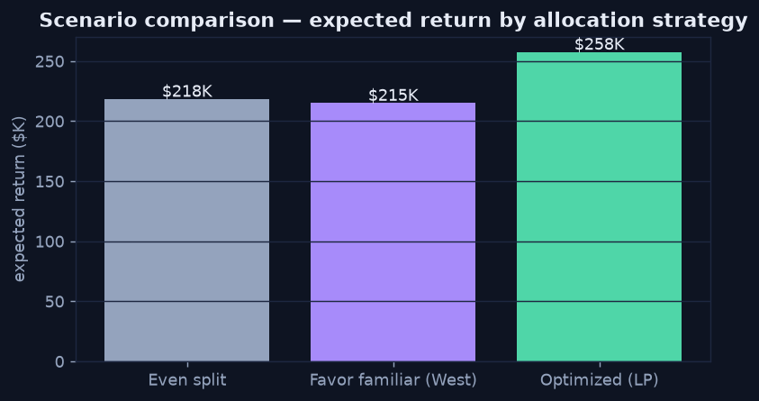

Scenarios — Model the Levers
Chapter 1 — What-If Analysis
The first prescriptive move is what-if analysis: take the levers you actually control — here, how a fixed marketing budget is split across three channels — and project the outcome under different choices. Each scenario reuses the expected return per channel (the kind of estimate a predictive model supplies), so you compare concrete futures instead of arguing from gut feel.
The Decision
A $100K budget, three channels with different expected returns per dollar: West (2.10×), Email (1.40×), and Paid search (3.05×). How should it be split? Three candidate strategies make the stakes visible.
Python · scenario math
returns = {"West": 2.10, "Email": 1.40, "Paid search": 3.05}
scenarios = {
"Even split": [33_333, 33_333, 33_333],
"Favor familiar (West)": [60_000, 20_000, 20_000],
"Optimized (LP)": optimize(), # see Chapter 3
}
for name, alloc in scenarios.items():
expected = sum(a * r for a, r in zip(alloc, returns.values()))
print(f"{name}: ${expected:,.0f}")
Both intuitive plans — splitting evenly, or over-funding the familiar channel — leave roughly $40K on the table versus a deliberate optimization.
What the Comparison Teaches
- Intuition underperforms. The "favor the familiar channel" plan actually does slightly worse than a naive even split — over-funding a mid-return channel costs money.
- Scenarios quantify the gap. "Optimize" is abstract until you can say it is worth ~$40K over the obvious alternatives. That number is what gets a decision approved.
- Scenarios are the setup, not the answer. Comparing a handful of hand-picked plans is useful, but the best plan usually isn't one you'd think to try — which is what the optimizer is for.
Before optimizing, though, the plan has to respect the rules of the business — the subject of the next chapter.